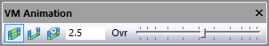

Toolbars
Toolbars provide quick and easy access to the most commonly used controls. Toolbars can be activated or hidden using the Tools»Toolbar menu selection, which opens the Toolbars dialog. With GENER and CERUN, toolbars can also be activated or hidden using a right-mouse context menu from the application window background. Toolbars are dockable, meaning that you can drag a toolbar to any of the four sides of the main window. Toolbars can also be undocked by dragging them away from the sides (or by holding the Ctrl key). This section describes the Virtual Machine toolbars and their associated functions and short-cut keys.
Not all toolbars and toolbar functions are available in all products. If a toolbar is not universally available, the applicable products are listed in the title.
View (CERUN & GENER only)
{kind=link}
The View toolbar is one of the standard toolbars available with the GENER and CERUN UI. This toolbar has buttons that control the visibility of windows used to trace the inputs and outputs of the process. Three of these buttons are unique to VM, as follows:
{kind=link}
{kind=link}
{kind=link}
VM Construct (QUEST only)
{kind=link}
{kind=link}
Simulation»Use World CS: When selected, object coordinates are listed in world coordinates, originating from the center of the grids. When unselected, an object’s coordinates are listed relative to its parent (i.e., in local coordinates). This button also affects the placement of objects copied from one place to another in the model navigator. When world coordinates are selected, the object retains its position despite being moved or copied from one place to another in the navigator hierarchy. When local coordinates are selected, the object is placed relative to its new parent at the same offset it was originally at relative to its old parent.
{kind=link}
Simulation»Group Selection: When selected, picking any component of a group will select the entire group. Objects can be grouped into larger components, for selection purposes, in the 3D Models»Groups»Selection section of the model navigator.
{kind=link}
Simulation»Construct Entity»Cube: Creates a cubic entity, given an XYZ origin and the width, length and height of the cube. Once created, the cube can be further rotated to the required orientation.
{kind=link}
Simulation»Construct Entity»Cylinder: Creates a cylindrical entity, given an XYZ origin and the radius and height of the cylinder. Once created, the cylinder can be further rotated to the required orientation. The starting and ending radii can also be modified.
{kind=link}
Simulation»Construct Entity»Cone: Creates a conical entity, given an XYZ origin, base radius and height of the cone. Once created, the cone can be further rotated to the required orientation. The starting and ending radii can also be modified.
{kind=link}
Simulation»Construct Entity»Sphere: Creates a spherical entity, given an XYZ origin and radius of the sphere. Once created, the sphere can be further rotated to the required orientation. The “number of subdivisions” controls the smoothness of the sphere, with a value 0 producing a (20 face) icosahedron, and increasing subdivisions increases the faces by a factor of 3. A maximum of 6 subdivisions is permitted (very CPU intensive).
{kind=link}
Simulation»Construct Entity»Revolved: Sweeps a 2D profile over a complete or partial arc to produce a surface of revolution. The profile is defined as a series of (radius, height) pairs of coordinates, which is swept around the Z-axis. Once created, the surface can be further rotated to the required orientation.
{kind=link}
Simulation»Construct Entity»Extruded: Sweeps a 2D closed profile along a vector to produce an extruded surface. The profile is defined as a series of (x, y) pairs of coordinates, joined at the start an end, which is extruded along a vector (positive Z by default) for a specified distance. Once created, the surface can be further rotated to the required orientation.

Simulation»Construct Entity»Mesh: Imports an STL mesh into the model. Once imported, the mesh surface can be further scaled and rotated to its required size and orientation. A “Smoothing” function can improve the appearance of facetted surfaces by using smooth light rendering at edges having a change of angle within a specified amount.
{kind=link}
Simulation»Construct Entity Picture: Loads a bitmap image, given the point in the model for the lower left corner of the image, and the X-axis width and Y-axis height of the image in model coordinates. The picture can be rotated to the required orientation.
{kind=link}
Simulation»Construct Axis»Linear Axis: Creates a linear axis, given a point of origin and the direction and range of motion.
{kind=link}
Simulation»Construct Axis»Rotary Axis: Creates a rotary axis, given a point of origin, the rotation axis and an optional range of motion.
{kind=link}
Simulation»Construct Axis»Curve Axis: Creates a curved axis, given a point of origin and an open or closed 2D profile. The profile is defined as a series of (x, y) pairs of coordinates. The curved axis can be further rotated the required orientation.
{kind=link}
Simulation»Construct Axis»Tool Axis: Creates a tool reference point that can identify one of: the SCP of the machine, a specific pocket in the tool changer, or other named places where tools might be attached.
{kind=link}
Simulation»Construct Axis»Stock Axis: Creates a part reference point that identifies where fixtures and parts are loaded on the machine.
{kind=link}
Simulation»Construct Axis»Head Axis: Creates a head reference point that can identify one of: the head attachment point on the machine, head storage locations for inactive heads, and other places where heads might be attached.

Simulation»Construct Axis»Reference Axis: Creates a reference point in the model. Reference points are used to group related entities.
VM Mode (CERUN & GENER only)

{kind=link}
Simulation»Mode»Camera: Selects “camera” mode, which is equivalent to selecting the “Default to camera mode” checkbox in the Simulation»Options (Ctrl Alt O) Misc settings. The left-mouse button will subsequently control the orientation of the camera. The mouse pointer will appear as a four-way arrow. Hold the Ctrl key down to temporarily (while the key is held) switch to “selection” mode.
{kind=link}
Simulation»Mode»Selection: Selects “selection” mode, which is equivalent to clearing the “Default to camera mode” checkbox in the Simulation»Options (Ctrl Alt O) Misc settings. The left-mouse button will subsequently select objects. The mouse pointer will appear as an arrow. Hold the Ctrl key down to temporarily (while the key is held) switch to “camera” mode.
{kind=link}
Simulation»Mode»Measurement: Selects “measurement” mode. The left-mouse button will subsequently select objects for measurement purposes. The mouse pointer will appear as caliper/square combination. Hold the Ctrl key down to temporarily (while the key is held) switch to “camera” mode.

Simulation»Mode»Pause Material Removal: Temporarily disables material removal simulation (MRS). When selected, the in-process stock and machinable fixtures will not be affected by the cutting action of the tool.
{kind=link}
Simulation»Mode»Pause Gouge Detection: Temporarily disables tool vs. part gouge detection. When selected, interference (i.e., collisions) will no longer be diagnosed between the cutting tool and the design part.
{kind=link}
{kind=link}
VM Grid

The VM Grid toolbar contains a drop-down list of all axes defined in the model (including tool, head and stock axes). The grid reference zero and orientation will be with respect to the selected axis. The standard viewpoint settings in the VM View toolbar are also with respect to the selected grid axis.
{kind=link}
Simulation»Show»XY Plane Grid: Views or hides the XY plane grid. Line spacing, colors, units and other settings are controlled by selecting Simulation»Grid (Ctrl G).
{kind=link}
{kind=link}
{kind=link}
Simulation»Show»Axes Marker: Views or hides the axes marker showing the origin. Marker size, colors and other settings are controlled by selecting Simulation»Grid (Ctrl G).

Simulation»Show»Kinematics: Views or hides the kinematics markers showing the type and position of linear axes, rotary axes, and the TCP and SCP control point positions.
{kind=link}
Simulation»Show»Safety Zones: Views or hides the display of the safety zone that surrounds objects that have a safe distance setting for collision testing. The safety zone is drawn with a fixed transparent color, so that the underlying object can also be seen.
{kind=link}
Simulation»Show»Workpiece Reference: Views or hides the display of a marker showing the origin and orientation of the workpiece coordinate frame. This frame includes the effects of fixture compensation, RTCP and any local coordinate system (LCS).

Simulation»Show»Tool Reference: Views or hides the display of a marker showing the offset at the spindle control point (SCP) due to the effects of tool length or tool offset compensation.
{kind=link}
Simulation»Grid (Ctrl Alt G): Enables or disables the “snap-to-grid” mode of object construction using the mouse. When enabled, mouse coordinates snap to a defined grid size. Hold the Shift key to temporarily (while the key is held) reverse the snap-to-grid setting. Grid spacing can also be set by selecting Simulation»Grid.
VM View

The 6 middle buttons on the VM View toolbar lock the simulation window camera rotation to one of 6 standard views, with respect to the axis selected in the VM Grid toolbar. While any one of these 6 buttons is selected, camera rotation functions are disabled and the camera can be panned only.
{kind=link}
Simulation»Camera»Perspective: Switches to a 3D Perspective view of the simulation window. When deselected, switches to an Orthogonal view of the simulation window.

Simulation»Camera»Front: Switches to a front view of the simulation window.
{kind=link}
{kind=link}
{kind=link}
{kind=link}
{kind=link}
{kind=link}
VM View Filter (CERUN & GENER only)
{kind=link}
{kind=link}
Simulation»Show»Filters»Machine: Views or hides the display of the machine model and any head components.

Simulation»Show»Filters»Tools: Views or hides the display of the tools.

Simulation»Show»Filters»Fixtures: Views or hides the display of the fixtures.

Simulation»Show»Filters»Stock: Views or hides the display of the initial stock.
{kind=link}
{kind=link}
Simulation»Show»Filters»In-process Stock: Views or hides the display of the in-process stock, as calculated by the Material Removal Simulation option.
{kind=link}
Simulation»Show»Filters»Stock Checkpoints: Toggles the display of the in-process stock as it appeared at earlier moments in time when moving the Time Line backwards and forwards. These earlier checkpoints can be taken at each tool change, at each operation and/or periodically during long cutting sequences as controlled from the Simulation»Options menu MRS tab “In-process stock checkpoints” settings.

Simulation»Show»Filters»Boolean Overcut: Views or hides the display of gouges in the finished part, as calculated by the Material Removal Simulation option.

Simulation»Show»Filters»Boolean Undercut: Views or hides the display of excess stock material, as calculated by the Material Removal Simulation option.

Simulation»Show»Filters»Colorized Boolean: Views or hides the display of a color graduated difference between stock and part, as calculated by the Material Removal Simulation option. Select Simulation»Compare (Ctrl Alt Q) to view or modify comparison settings. Colorized differences are available only when one or both of the Overcut or Undercut buttons are selected.

Simulation»Show»Filters»Transparent Zero: Modifies the display of colorized differences between stock and part to either show in a transparent color, or not show, all faces of the gouge or excess material that are within an acceptable tolerance with respect to the part.
VM Measure

The buttons on the VM Measure toolbar are only available while in measurement mode, as set using the Measurement button on the VM Mode toolbar or Simulation»Mode»Measurement menu bar. The 3 middle buttons are filters that enable or disable picking of the various components of the triangles that make up the in-process stock.
{kind=link}
Simulation»Measure»Distances and angles: Measures the distance and angle between subsequently selected entities, as well as the xyz offset between entities.

Simulation»Measure»Radius and center: Measures the radius and xyz center of a circle constructed through 3 subsequently selected points and/or edge midpoints.

Simulation»Measure»Vertex: Enables or disables the picking of points on the boundary of the triangles that make up the object.

Simulation»Measure»Edge: Enables or disables the picking of edges of the triangles that make up the object.

Simulation»Measure»Face: Enables or disables the picking of faces of the triangles that make up the object.

Simulation»Measure»Fan: Switches between chained (one to the next) and fanned (one to many) measurements.

Simulation»Measure»Overlay: When enabled, the objects selected for measurement will always be visible, no matter how the camera is oriented.
VM Animation (CERUN & GENER only)
{kind=link}
{kind=link}
Selects continuous animation mode, which is equivalent to selecting “Continuous” in the Simulation»Options (Ctrl Alt O) dialog Misc tab Animation control settings. Select this method to slow the simulation down to some factor of real time, as controlled by the slider.
{kind=link}
{kind=link}
VM Tool Path (CERUN & GENER only)


Simulation»Show»Tool Path (Ctrl T): Views or hides the display of the tool path trace in the simulation window. Trace data is always recorded, regardless of the display setting.
{kind=link}
Simulation»Show»Tool Vector: Views or hides the display of the tool axis vector when tool path tracing is enabled in the simulation window.

Simulation»Show»Tool Path as Overlay (Ctrl Shift T): When selected, the tool path trace is always visible, even when the tool path is behind objects that would normally obscure the trace.
{kind=link}
Limits the trace to the last specified number of seconds, defined in the numeric input field. This is equivalent to selecting “From last n seconds” in the Simulation»Options (Ctrl Alt O) dialog Tool path tab Mode settings.
{kind=link}
Limits the trace to the last specified number of tool changes. This is equivalent to selecting “From last n tools” in the Simulation»Options dialog Tool path tab Mode settings.
{kind=link}
VM Cross Section (CERUN & GENER only)

The Cross Section functions can be used to obtain a cross section view of the in-process stock, which is only available when the Material Removal Simulation (MRS) license option is enabled.

Simulation»Show»Cross Section»XY Plane: Enables or disables a cross section view of the in-process stock taken along the XY plane of the stock axis. The section plane can be offset by entering a value in the numeric input field.
{kind=link}
Simulation»Show»Cross Section»YZ Plane: Enables or disables a cross section view of the in-process stock taken along the YZ plane of the stock axis. The section plane can be offset by entering a value in the numeric input field.

Simulation»Show»Cross Section»ZX Plane: Enables or disables a cross section view of the in-process stock taken along the ZX plane of the stock axis. The section plane can be offset by entering a value in the numeric input field.
{kind=link}
Simulation»Show»Cross Section»Custom Plane: Enables or disables a cross section view of the in-process stock taken along a plane defined using the Simulation»Measure picking functions. The section plane can be offset by entering a value in the numeric input field.

Simulation»Show»Cross Section»Invert Plane: Switches between showing the in-process stock on one side of the cross section plane or the other.

Simulation»Show»Cross Section»Show Grid: Enables or disables the display of a grid on the cross section plane. Grid settings are the same as for the Simulation»Grid feature.

Simulation»Show»Cross Section»Push Plane: Each press of this button further offsets the cross section plane by a fixed amount (as defined in the Simulation»Options dialog Misc tab) towards the visible portion of the in-process stock. The current offset is shown in the numeric field.
{kind=link}
VM Annotation (CERUN & GENER only)
{kind=link}
The Annotation functions provide a rudimentary capability to first (optionally) mark-up the simulation window and then take snapshots and/or videos of the simulation.
{kind=link}
Simulation»Annotation»Annotate: Toggles the left-mouse action between annotate and non-annotate modes. When in annotation mode, the cursor will appear as a small pencil that will draw in the simulation window when the left-mouse button is held down. Drawing is equivalent to marking a glass pane that appears on top of the simulation window.
{kind=link}
{kind=link}
{kind=link}
Simulation»Annotation»Snapshot: Takes a PNG image of the simulation window, including annotation data if present. Picture files are stored in the folder identified by the vm_picture_dir configuration (i.e., DEF file) variable. If this variable is not defined or is blank, then pictures are stored in the user’s “Pictures\ICAM\260” folder. Picture files are named “picnnn.png”, where nnn is a number automatically chosen to avoid overwriting an existing picture.
{kind=link}
Simulation»Annotation»Record: Starts or stops the recording of the contents of the simulation window, including annotation data if present. Video files are stored in the folder identified by the vm_video_dir configuration variable. If this variable is not defined or is blank, then videos are stored in the user’s “Videos\ICAM\260” folder. Video files are named “videonnn.avi” where nnn is a number automatically chosen to avoid overwriting an existing video. Recording options can be set by selecting the Video button in the Simulation»Options dialog Misc tab.
{kind=link}